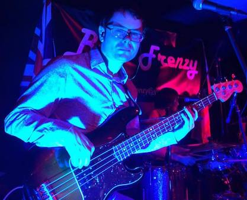

About the Band

Beat Frenzy are an all live tribute to the '50s and '60s. Playing everything from Rock'n'roll hits like Rock Around the Clock by Billy Haley and His Comets and C'mon Everybody by Eddie Cochran to '60s classics like The Wanderer by Dion and Twist and Shout by the Beatles.
The band have performed all over the UK and abroad in venues such as WMCs, holiday parks, night clubs and performing at corporate functions, military bases, weddings and birthdays.
Beat Frenzy are fully self-contained with a full band set up, top PA system, lights and backdrop. The band usually play two 45 minute sets which can be altered when required.